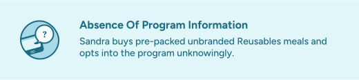
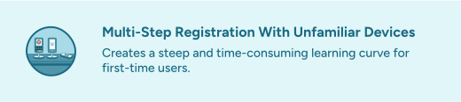
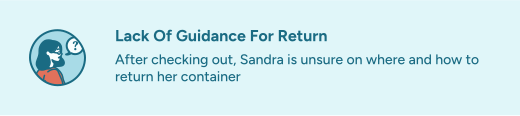
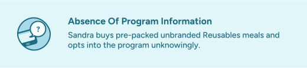
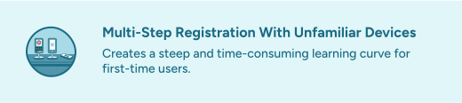
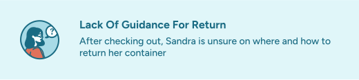
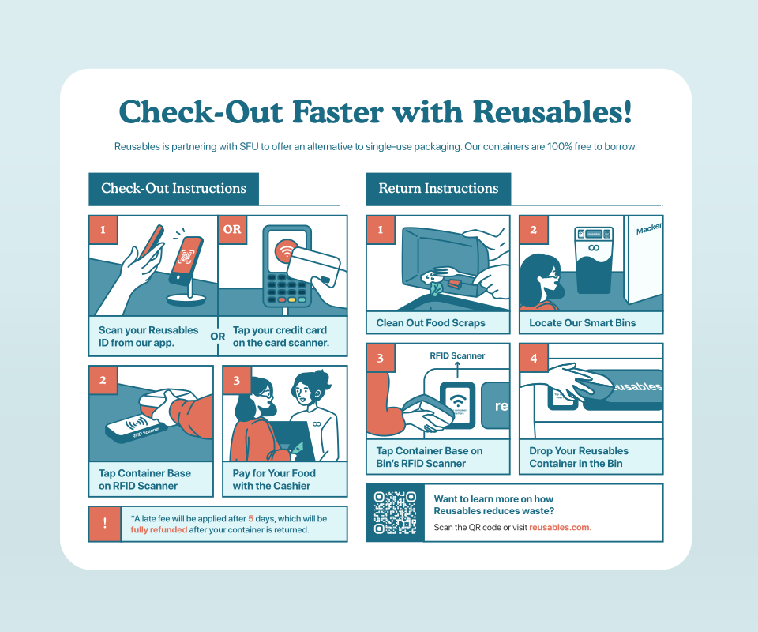

Informative Packaging
An eco-friendly and reusable label that guides users through the entire program.
Project Overview
This was an Interaction Design project where the premise was to identify a UX intervention opportunity with clear value propositions. Our client was Reusables, a container-borrowing service that operates in campuses and restaurants. I took on the product designer role, overseeing all UX research processes.
Role
Product Designer, Interaction Designer, UX Researcher, Illustrator
Tools
Figma, Adobe Photoshop, Adobe Illustrator
Timeline
Jan - Apr 2023
Team
Christina Raganit, Alison Lu, Kasey Le
Our Client
Understanding Reusables
To identify opportunities, I conducted ethnography studies at partnered restaurants to experience Reusables’ circular economy model first-hand as a user and worker. Additionally, I talked to servers to understand their behaviors when offering the program.
Research
Ethnography Challenges & Key Insights
Unfortunately, there was difficulty in contacting restaurants for formal interviews, resulting in only brief interactions with servers and a lack of data from customers. I overcame this issue by discovering a new touchpoint and shifting the focus to Simon Fraser University’s Mackenzie Cafe. Here, I conducted in-person and remote interviews with frequent cafeteria users and found that containers were mandatory for vendors. My research led to 4 key insights:
 





Design Focus
Who Am I Designing For?
Therefore, I focused on designing for first-time users who are pressed for time. The scope was to streamline the registration to return process so they can easily participate in the program. This ensures that the intervention provides value across multiple interaction points.
“How might we inform first-time users in a rush with Reusables instructions before, during, and after the program to facilitate a faster registration to return process?”
Solution
Informative Packaging Sleeve Solution
To identify opportunities, I conducted ethnography studies at partnered restaurants to experience Reusables’ circular economy model first-hand as a user and worker. Additionally, I talked to servers to understand their behaviors when offering the program.

Impact
Usability Testing
Finally, I conducted a prototype testing with 5 first-time users. The study revealed reduced time and human assistance needed during the experience, and an increase in future retention. These results led our client to express interest in implementing the solution.

Reflection
Takeaways
While promoting sustainable habits may add an extra step for users, I learned that simplifying processes with the user in mind is crucial for fostering widespread adoption of new practices. I've also learned the importance of thorough preparation, especially in contacting stakeholders in advance for interviews. Next time, I'll ensure better preparation to gather richer ethnographic data from various types of users.